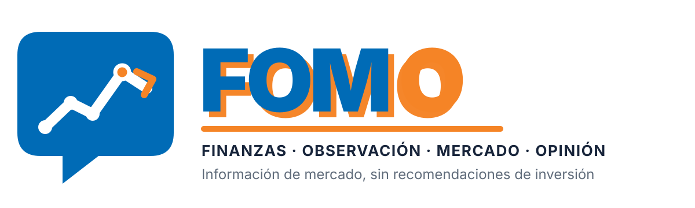
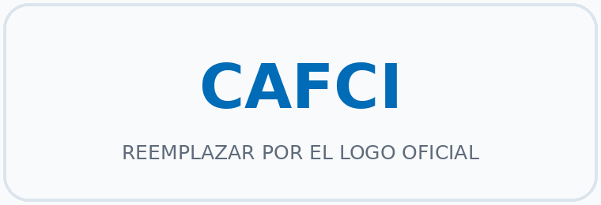
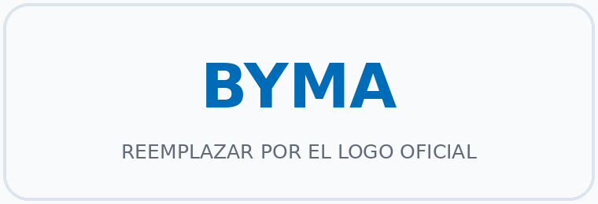

Entendé qué está pasando el mercado, con información clara.
FOMO será una plataforma de información financiera para personas que ahorran en Argentina. El objetivo es analizar los flujos en el mercado Argentino, particularmente mirando los Fondos Comunes de Inversión. El primer producto consistirá en la generación de un dashboard, donde pueda entenderse de forma fácil para donde se está moviendo el mercado. Adicionalmente, a traves de información proveniente de informes de Alycs, Consultoras Macroeconomicas y colaboradores se generará (automaticamente, mediante el uso de Inteligencia Artificial) un "semaforo" sobre la View del mercado sobre ciertas familias de activos.
FOMO explicará hechos, indicadores y opiniones con sus fechas, fuentes y limitaciones. No brindará recomendaciones personalizadas, no administrará dinero y no indicará qué comprar, vender o mantener.
Fuentes de datos previstas
La primera versión se desarrollará con información pública y/o debidamente autorizada.

Fondos Comunes de Inversión
Información de CAFCI sobre patrimonio, cuotapartes, valores de cuotaparte, categorías y composición de fondos.

Mercado de capitales
Información de BYMA sobre instrumentos, precios, volumen y monto negociado para detectar actividad inusual.